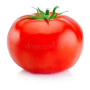

TOMATE


prix=1.00 €
ajouter au panier
DESCRIPTION
Le plant de tomates est une plante herbacée sensible au froid, vivace en climat chaud, généralement annuelle. C'est une plante à croissance indéterminée, mais il existe des variétés à croissance déterminée, c'est-à-dire dont la fonction végétative, sur chaque tige, s'arrête précocement, puisque la tige se termine par un bouquet floral. Chez les variétés à port indéterminé, chaque bouquet floral est séparé par trois feuilles, et la plante peut croître ainsi indéfiniment. Chez les variétés à port déterminé, les inflorescences sont séparées par deux feuilles, puis une feuille, avant de se retrouver en position terminale sur la tige. La plante continue ensuite sa croissance non pas sur la tige principale, mais sur les tiges secondaires qui poussent à l'aisselle des feuilles (les « gourmands ») également de manière déterminée. Son port, dressé en début de croissance, devient retombant ou semi-retombant au fil de la croissance et de la ramification des tiges, nécessitant des supports selon les types de culture. Son système racinaire est de type pivotant à tendance fasciculée. Très dense et ramifié sur les trente premiers centimètres, il peut atteindre un mètre de profondeur.
caractéristique
Glucides 2,60 g Amidon=0,080 g Sucres=2,52 g Fibres alimentaires=0,95 g Protéines=0,95 g Lipides=0,210 g Saturés=0,037 g Oméga-3=0,009 g Oméga-6=0,091 g Oméga-9=0,023 g Eau 94,20=g Cendres totales=0,61 g
DES PRODUITS SIMILAIRES
privilégiez la cuisine à l'achat de la nourriture instantanée ou congelée dans les supermarchés pourquoi ? Parce que non seulement ça vous fait gagner en expérience culinaire mais ça vous permet aussi de faire des economies au lieu de toujours payer de la nourriture préparer par des inconnus faites l'effort de préparer votre propre nourriture là au moins vous ne serez pas deçu et même si vous etês deçu c'est une expérience de plus dans votre vie donc prenez la carotte, les pommes de terres, l'ognon et mettez vous à la cuisine et bonne degustation